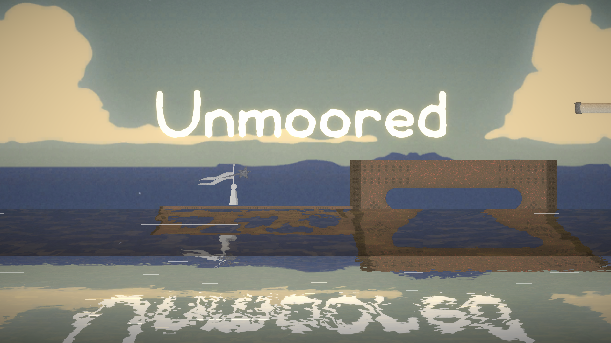
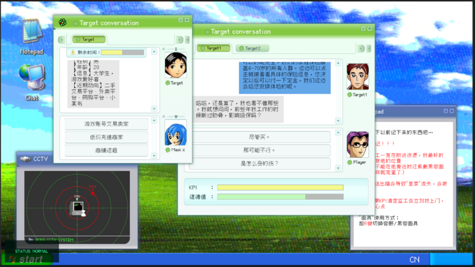

李乐石
Computer Science @ ShanghaiTech. Gameplay programming, multiplayer systems, and AI-driven 3D generation. Building interactive worlds that combine technical depth with creative design.
作品 / Projects
-
Forge
Lead programmer. A physical rhythm game where you hammer a blade into shape to the beat. Built a chart-driven rhythm engine with JSON chart format, 5-lane note system, and 3-tier timing judgement. Real-time vertex-level mesh morphing deforms a steel block into the target sword blade as the player's accuracy increases — blade-only vertex extraction with sweep-axis progression and edge bevel algorithms. Integrated pressure sensor for physical hammer input. BPM-synced fire light system, chromatic aberration pulses on perfect hits, and a full tutorial with AI coach hammer.
-

Unmoored
Lead programmer · CiGA Game Jam 2026. A 2D vertical climbing tower game with a unique asymmetric co-op mechanic: one player anchors to terrain to become a pivot, the other swings around them to reach higher ground. The player-as-anchor mechanic is the core innovation — no other climbing game lets a character become the anchor point. Built with EventBus architecture for decoupled systems, ScriptableObject-driven config, and a map scroll controller that responds to anchor state. Three-layer tower with tutorial, risk, and rapid-swap sections. 48h jam, 3-person team.
Bilibili 演示 → GitHub 仓库 → -
Mana Mingle
Multiplayer spell-combat prototype in Unity. Modular spell architecture separating Spell, Projectile, and Damage systems via ScriptableObjects. Component-based combat interactions with a mana resource system, built on Unity Netcode for GameObjects.
Bilibili 演示 → GitHub 仓库 → -
Rising Ground
Physics-based platformer with destructible terrain and bomb mechanics. Grid-based terrain system generating 1000+ destroyable cubes, explosion force simulation, two bomb types, real-time trajectory prediction, and camera occlusion handling.
Bilibili 演示 → GitHub 仓库 → -

Exit Code: 1
Global Game Jam 2026 entry. Hybrid visual novel dialogue system combined with hacking mini-games. Implemented dialogue interaction, stealth-based surveillance mechanics, puzzle progression logic, and integrated prefab-based art assets and UI.
Global Game Jam 页面 → -
Env Secrets
HoloLens MR experience for marine conservation. MRTK hand-tracking driven fishing rod with rope physics for casting and retrieval. Jellyfish collection system identifying three water pollutants (BPA, phthalates, heavy metals) with specimen info cards. Real-time water color shift from murky to clear reflecting restoration progress. Vuforia image recognition for MR content triggers.
Bilibili 演示 → -
AI 3D Scene Generation
Independent research at MARS Lab exploring LLM-driven 3D scene generation. Designed an agent-based pipeline that produces scene layouts from natural language, integrating Unity, Blender, and Python workflows for automated asset generation and assembly.
关于 / About
I am a Computer Science undergraduate at ShanghaiTech interested in gameplay programming, multiplayer systems, and AI-driven 3D generation. I enjoy building interactive systems that combine technical depth with creative design — especially in games and virtual environments where code meets player experience.
目前在上海科技大学 MARS Lab 做独立研究，方向是 LLM 驱动的 3D 场景生成。 此前在 4DVLab 参与过人中心点云理解的研究工作。2025 年秋季在 UC Berkeley 交换一学期，修了计算机安全、AI、编译原理和计算机视觉。喜欢在 Global Game Jam 这样的活动里快速把想法变成可玩的 prototype。
- Education
- B.Eng. in Computer Science, 上海科技大学 (ShanghaiTech University)
- School of Information Science and Technology · Sep 2023 – Jun 2027 (Expected)
- Relevant Coursework: Data Structures, Operating Systems, Computer Architecture, Parallel Computing, Unity Game Development
- Visiting Student, University of California, Berkeley · Fall 2025
- Coursework: Computer Security, Introduction to Artificial Intelligence, Programming Languages & Compilers, Computer Vision & Computational Photography
Technical: C++, C#, C, Python · Unity, Git, Blender · Gameplay Programming, Multiplayer Systems